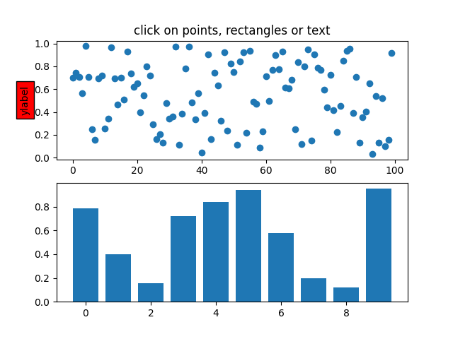
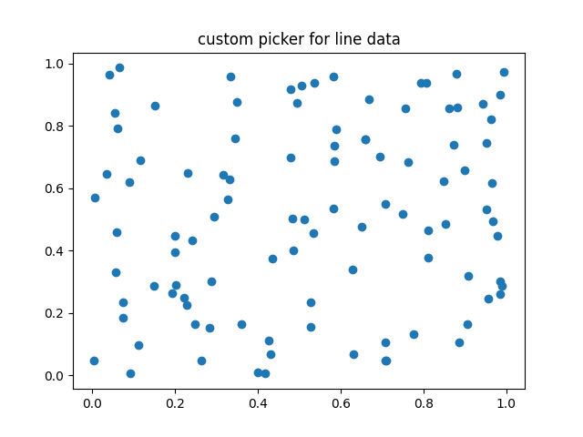
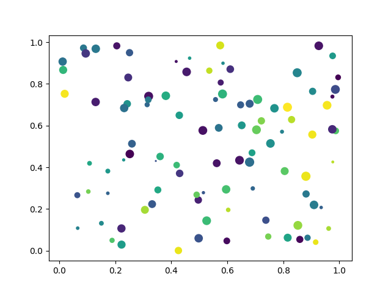
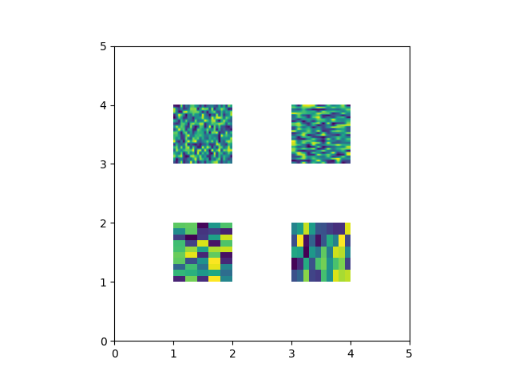

Note
Click here to download the full example code
Pick Event Demo¶
You can enable picking by setting the "picker" property of an artist (for example, a matplotlib Line2D, Text, Patch, Polygon, AxesImage, etc...)
There are a variety of meanings of the picker property:
None - picking is disabled for this artist (default)
bool - if True then picking will be enabled and the artist will fire a pick event if the mouse event is over the artist.
Setting
pickradiuswill add an epsilon tolerance in points and the artist will fire off an event if its data is within epsilon of the mouse event. For some artists like lines and patch collections, the artist may provide additional data to the pick event that is generated, for example, the indices of the data within epsilon of the pick eventfunction - if picker is callable, it is a user supplied function which determines whether the artist is hit by the mouse event.
hit, props = picker(artist, mouseevent)
to determine the hit test. If the mouse event is over the artist, return hit=True and props is a dictionary of properties you want added to the PickEvent attributes.
After you have enabled an artist for picking by setting the "picker" property, you need to connect to the figure canvas pick_event to get pick callbacks on mouse press events. For example,
- def pick_handler(event):
- mouseevent = event.mouseevent artist = event.artist # now do something with this...
The pick event (matplotlib.backend_bases.PickEvent) which is passed to your callback is always fired with two attributes:
- mouseevent - the mouse event that generate the pick event. The
- mouse event in turn has attributes like x and y (the coordinates in display space, such as pixels from left, bottom) and xdata, ydata (the coords in data space). Additionally, you can get information about which buttons were pressed, which keys were pressed, which Axes the mouse is over, etc. See matplotlib.backend_bases.MouseEvent for details.
artist - the matplotlib.artist that generated the pick event.
Additionally, certain artists like Line2D and PatchCollection may attach additional meta data like the indices into the data that meet the picker criteria (for example, all the points in the line that are within the specified epsilon tolerance)
The examples below illustrate each of these methods.
- 
- 
- 
- 
import matplotlib.pyplot as plt
from matplotlib.lines import Line2D
from matplotlib.patches import Rectangle
from matplotlib.text import Text
from matplotlib.image import AxesImage
import numpy as np
from numpy.random import rand
# Fixing random state for reproducibility
np.random.seed(19680801)
def pick_simple():
# simple picking, lines, rectangles and text
fig, (ax1, ax2) = plt.subplots(2, 1)
ax1.set_title('click on points, rectangles or text', picker=True)
ax1.set_ylabel('ylabel', picker=True, bbox=dict(facecolor='red'))
line, = ax1.plot(rand(100), 'o', picker=True, pickradius=5)
# pick the rectangle
ax2.bar(range(10), rand(10), picker=True)
for label in ax2.get_xticklabels(): # make the xtick labels pickable
label.set_picker(True)
def onpick1(event):
if isinstance(event.artist, Line2D):
thisline = event.artist
xdata = thisline.get_xdata()
ydata = thisline.get_ydata()
ind = event.ind
print('onpick1 line:', np.column_stack([xdata[ind], ydata[ind]]))
elif isinstance(event.artist, Rectangle):
patch = event.artist
print('onpick1 patch:', patch.get_path())
elif isinstance(event.artist, Text):
text = event.artist
print('onpick1 text:', text.get_text())
fig.canvas.mpl_connect('pick_event', onpick1)
def pick_custom_hit():
# picking with a custom hit test function
# you can define custom pickers by setting picker to a callable
# function. The function has the signature
#
# hit, props = func(artist, mouseevent)
#
# to determine the hit test. if the mouse event is over the artist,
# return hit=True and props is a dictionary of
# properties you want added to the PickEvent attributes
def line_picker(line, mouseevent):
"""
Find the points within a certain distance from the mouseclick in
data coords and attach some extra attributes, pickx and picky
which are the data points that were picked.
"""
if mouseevent.xdata is None:
return False, dict()
xdata = line.get_xdata()
ydata = line.get_ydata()
maxd = 0.05
d = np.sqrt(
(xdata - mouseevent.xdata)**2 + (ydata - mouseevent.ydata)**2)
ind, = np.nonzero(d <= maxd)
if len(ind):
pickx = xdata[ind]
picky = ydata[ind]
props = dict(ind=ind, pickx=pickx, picky=picky)
return True, props
else:
return False, dict()
def onpick2(event):
print('onpick2 line:', event.pickx, event.picky)
fig, ax = plt.subplots()
ax.set_title('custom picker for line data')
line, = ax.plot(rand(100), rand(100), 'o', picker=line_picker)
fig.canvas.mpl_connect('pick_event', onpick2)
def pick_scatter_plot():
# picking on a scatter plot (matplotlib.collections.RegularPolyCollection)
x, y, c, s = rand(4, 100)
def onpick3(event):
ind = event.ind
print('onpick3 scatter:', ind, x[ind], y[ind])
fig, ax = plt.subplots()
ax.scatter(x, y, 100*s, c, picker=True)
fig.canvas.mpl_connect('pick_event', onpick3)
def pick_image():
# picking images (matplotlib.image.AxesImage)
fig, ax = plt.subplots()
ax.imshow(rand(10, 5), extent=(1, 2, 1, 2), picker=True)
ax.imshow(rand(5, 10), extent=(3, 4, 1, 2), picker=True)
ax.imshow(rand(20, 25), extent=(1, 2, 3, 4), picker=True)
ax.imshow(rand(30, 12), extent=(3, 4, 3, 4), picker=True)
ax.set(xlim=(0, 5), ylim=(0, 5))
def onpick4(event):
artist = event.artist
if isinstance(artist, AxesImage):
im = artist
A = im.get_array()
print('onpick4 image', A.shape)
fig.canvas.mpl_connect('pick_event', onpick4)
if __name__ == '__main__':
pick_simple()
pick_custom_hit()
pick_scatter_plot()
pick_image()
plt.show()
Total running time of the script: ( 0 minutes 1.186 seconds)
Keywords: matplotlib code example, codex, python plot, pyplot Gallery generated by Sphinx-Gallery